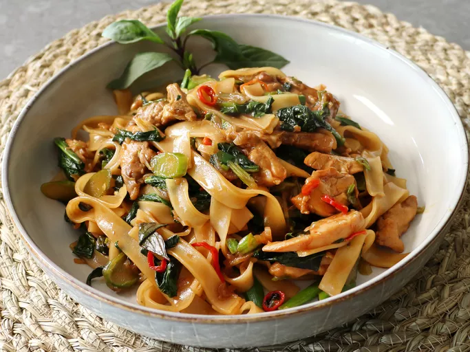

Chef John's Drunken Noodles
Ingredients
- 8 ounces dried rice noodles
- ¼ cup oyster sauce
- ¼ cup soy sauce
- 1 tablespoon Asian fish sauce
- 1 tablespoon maple syrup
- 1 teaspoon white sugar
- 2 tablespoons cold water
- 2 tablespoons vegetable oil
- 1 teaspoon sesame oil
- 6 teaspoons chile padi (bird's eye chiles), thinly sliced
- 4 cloves garlic, minced
- 4 scallions, thinly sliced
- 1 cup fresh Thai basil leaves